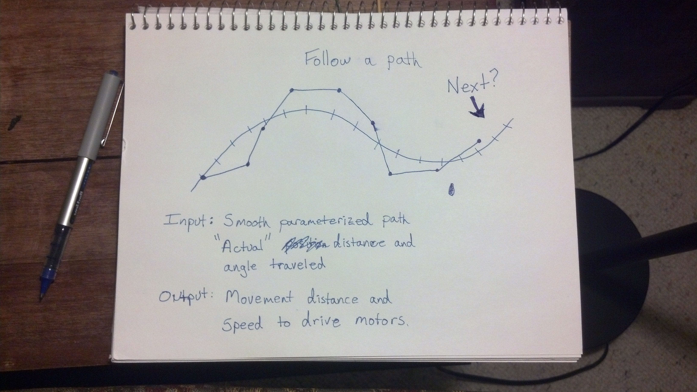

Once the robot has found a path and made it smooth, the robot has to actually follow it accurately. The robot will begin moving attempting to follow the path by sending direction and speed commands to the motors. The reality of the situation is that the robot will not follow this path precisely, so we have to correct periodically for drift and inaccuracies of our environment.